Scan initial
À l'installation, xGhost récupère la liste de tes abonnés. C'est la référence de départ.
Extension Chrome · open source
Extension Chrome gratuite, sans inscription, sans tracking.
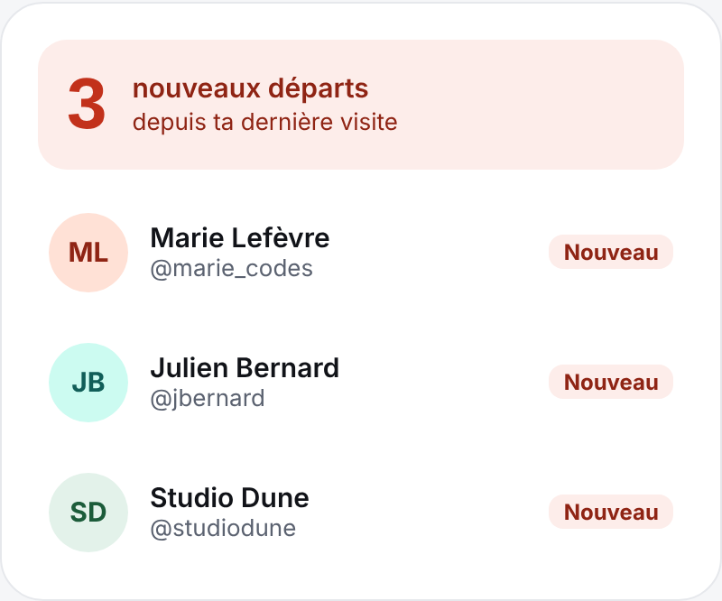
Fonctionnement
À l'installation, xGhost récupère la liste de tes abonnés. C'est la référence de départ.
Toutes les 6, 12 ou 24 h selon ton choix, il vérifie les arrivées et les départs.
Dès qu'un compte part, l'icône te le signale.
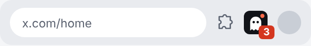
Aperçu
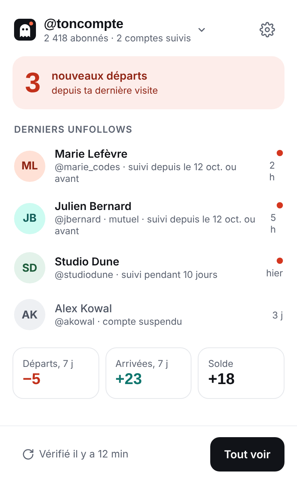
Les derniers départs, au clic sur l'icône.
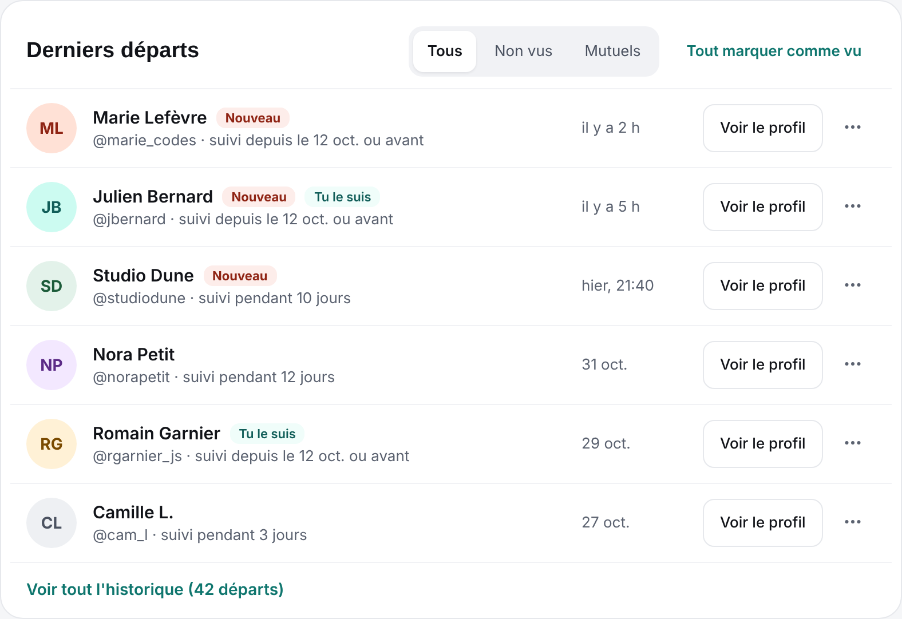
Tous tes départs et arrivées, au même endroit.
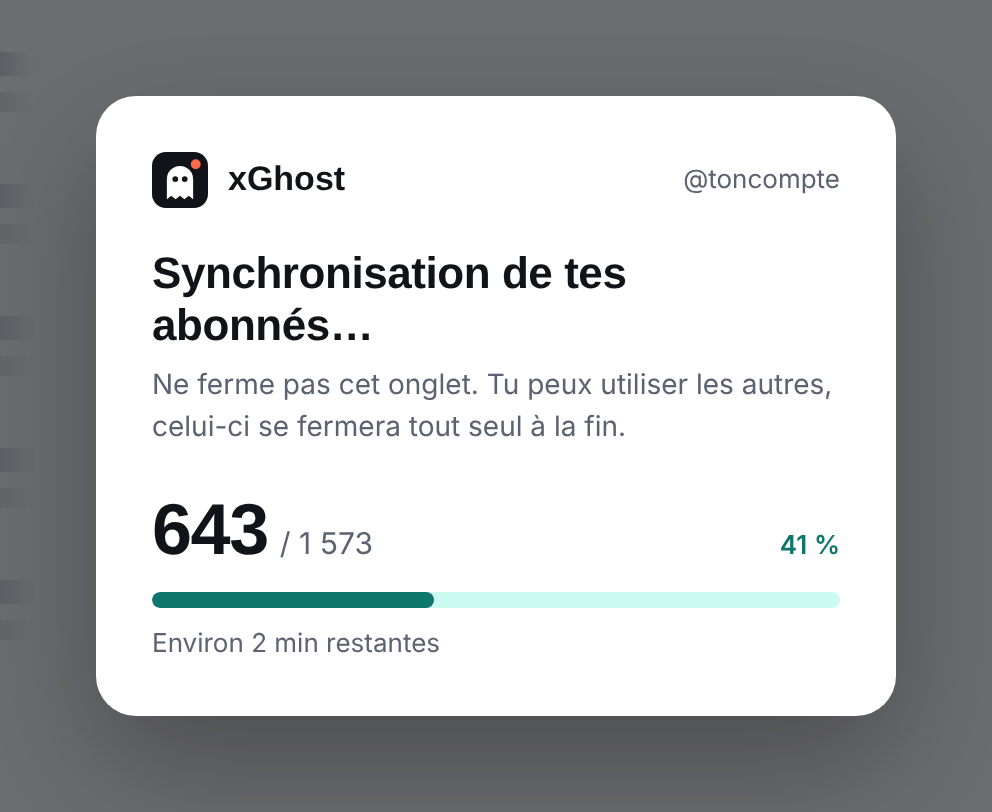
Dans un onglet x.com, qui se ferme tout seul.
Installation
Fonctionne sur Chrome, Brave, Edge et les navigateurs basés sur Chromium, sur ordinateur.
Télécharger le .zipLe bouton juste ici, à gauche. Il pointe toujours vers la dernière version.
Tu obtiens un dossier xGhost. Range-le dans un dossier où il restera, par exemple Documents : Chrome le relit à chaque démarrage, il ne faut ni le déplacer ni le supprimer ensuite.
Menu ⋮ › Extensions › Gérer les extensions (ou tape chrome://extensions).
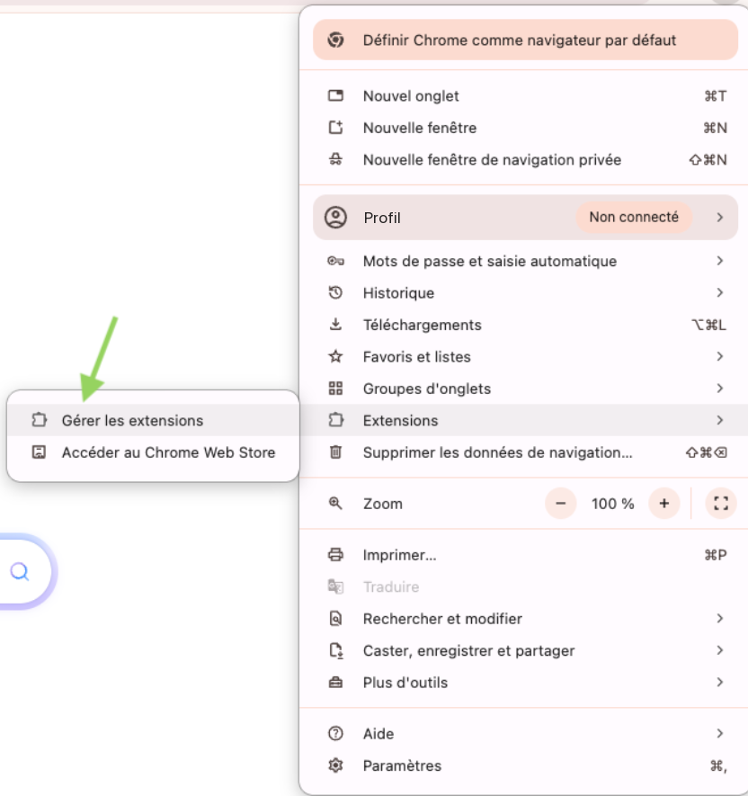
L'interrupteur est en haut à droite de la page.
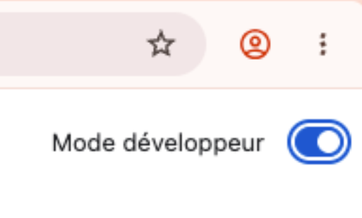
Clique sur « Charger l'extension non empaquetée », puis sélectionne le dossier xGhost.
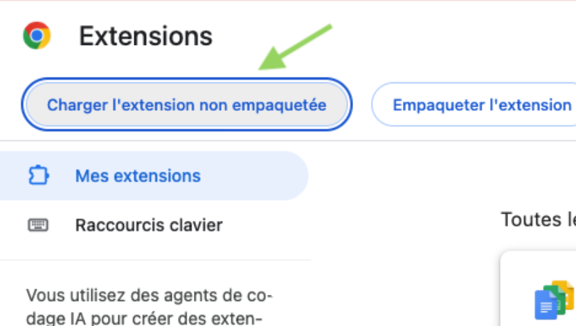
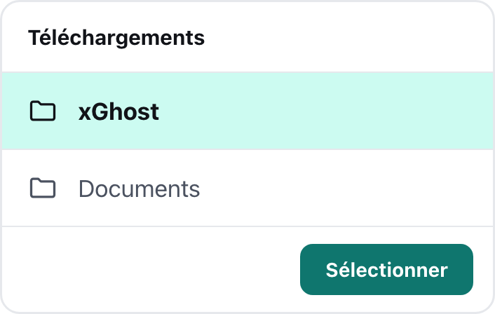
Épingle l'icône fantôme dans ta barre, puis clique dessus pour lancer la première synchronisation de tes abonnés.
Mise à jour
Remplace les fichiers dans le même dossier. Si tu changes de dossier, Chrome voit une nouvelle extension et ton historique local repart de zéro.
Le lien pointe toujours vers la dernière release.
Télécharger la dernière versionDécompresse-la dans le même dossier xGhost que la première fois, en écrasant les fichiers.
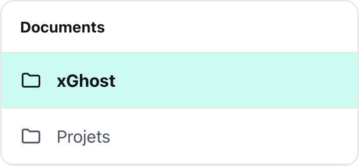
Menu ⋮ › Extensions › Gérer les extensions, puis clique sur la flèche circulaire de la carte xGhost.
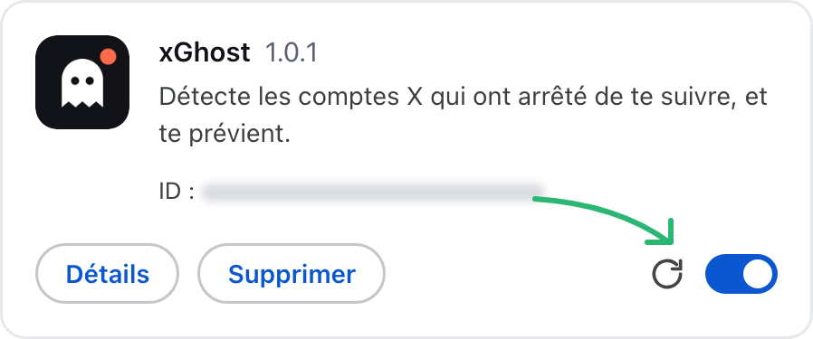
Ton historique et tes réglages sont conservés, rien d'autre à faire.
Confidentialité
Rien n'est envoyé ailleurs que vers x.com, avec ta propre session.
Pas d'analytics, pas de cookies tiers, pas de télémétrie.
Pas de compte xGhost à créer. Tu installes, c'est tout.
Tes données restent sur ton ordinateur. Exporte-les dans un fichier pour les retrouver après une réinstallation.
Questions
X ne fournit la liste de tes abonnés qu'à sa propre page. xGhost ouvre donc un onglet épinglé, fait défiler la liste, puis le ferme. Ne le ferme pas pendant le scan.
xGhost se contente de faire défiler ta liste d'abonnés, comme tu le ferais toi-même, en respectant les pauses imposées par X. Le risque est faible, mais aucune extension non officielle ne peut le garantir nul.
X compte dans ton total des comptes qu'il n'affiche pas (suspendus, restreints). À partir de 99 %, le scan est considéré comme complet.
X ne dit jamais depuis quand quelqu'un te suit. xGhost ne connaît que ce qu'il a vu : la date de ton premier scan, ou la date d'arrivée pour les nouveaux abonnés.
Oui. Connecte-toi à un autre compte sur x.com, xGhost le détecte et le suit séparément.
Non, uniquement Chrome et les navigateurs basés sur Chromium, sur ordinateur.